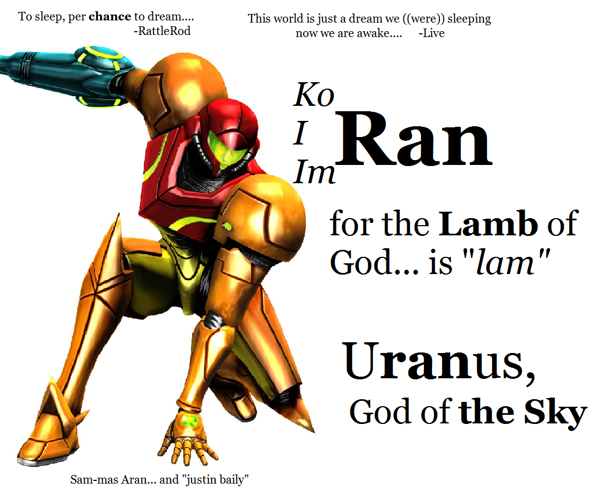

Psst, your attention please...
Without doubt, this is the most important moment in your entire life--well, I at least have been waiting for this moment to arrive; please read this letter, try to understand what I am presenting; this is life and death... Heaven or Hell... for everyone. Remind yourself, God does not play dice with the Universe. If you are most interested in my proof of the voice of God echoing through time and rock 'n roll, you might want to head over to the place where I discuss how He has been singing for somewhere between 30 and 6,000 years in a vain attempt to get Taylor Momsen to kiss me... I think. Or, it's Kismet. All in all, I am just about vain enough to suggest that most of the songs are really about me; that might be the point. If you take the time to read through it, you will probably be interested in what I am presenting here. It is the Apocalypse, and it is a good thing; I swear. :)
I am attempting to present to you the things that I have seen over the last few years, all together they are nothing short of the true Revelation of Jesus Christ; verifiable proof that we are living in a created "virtual" world on the doorstep of Heaven. That with this knowledge we have the power in hand to end world hunger, heal the sick, and nearly live forever in a much happier world filled with freedom and bliss all by doing little more than changing some of the underlying code of "The Matrix;" you would think this kind of message would get a decent reception. On top of that we are on the verge of an intelligence and computational explosion that will make all "almost immortal" nears so much more fruitful and fun that it's nearly impossible to imagine how anyone would want to continue to hide a message with such impact, but alas, here we are.
 
When you see something that walks, talks, and speaks like a duck... and you think to yourself "yum, chicken dinner" realize that you are the reason that we need a Second Coming. To be more blunt, when you see someone that looks like Jesus Christ wearing a glowing cross on his back, presenting a world changing message, and the telling you that he has already sent it to nearly every media outlet and government official in the English speaking world... and you have yet to see it on TV; understand that this event is designed to stop the most ostentatious example of censorship that the Universe has ever seen. Doing nothing, thinking "someone else will do it," or simply thinking that it's not that important is a vote to keep everyone in Hell. Realize it takes one "vote" to get everyone out, and we are still here. 1984 is not just knocking at your door, your phone lines have been cut, the mailbox is crazy glued shut, and the door has nine inch nails in it.
There is more than freedom speech at stake, democracy at large, and eventually civilization itself hangs in the balance. Breaking down this wall is the primary reason that this light, religion itself, and Jesus Christ exist, make no mistake: it is me, and this is it.
Eventually it will be clear that the artificial creation of language, of America, and the message you are receiving has been designed to do nothing short of deliver the freedom promised by God at the foundation of this country to the entire Universe. It should be clear that message of this import and magnitude should spread on social media and by word of mouth like wildfire, and it has not. Be aware, the fact that you have yet to see me on TV is a sign that something bad is happening. You have now been baptized in the fire of Matthew 3:11.
The message I am presenting later in this letter will conclusively show that the author of the Holy Bible is also responsible for the artificial creation of many of our languages: from English and Spanish to Hebrew. More than that, the influence of our creator leaps from scripture into modern art and our entire world through seeing Matrix-like links between a hidden Cypher (who happens to be a character in the Matrix) within all of these languages and a message from the Creator directly to you. I call understanding this message Taming the Spanglishrew and in the name that Shakespearean play you might begin to understand just how much of this hidden influence we have not seen though it shines a very bright light on history and specifically this very moment.
While the voice of God pervades nearly everything around us, every single song, every word, every movie, and every myth of every religion... this fire begins in a very small place: in the book of Exodus. The fire begins with the simple realization that Exodus, which is called the book of Names in Hebrew is designed specifically to highlight foreknowledge of English words and modern concepts in the ancient book. George W. Bush is an anthropomorphism of the Burning Bush... and this is the original intent of the scripture. Eventually this leads us to seeing that a very large percentage of the names of people and places around us are also designed, given by God in order to tell a unified story of Creation. The word for Holy Fire, for example, contains the English word sea parted by an apostrophe and reversed; along with several other prescient indicators surrounding this one event, is a maelstrom of proof of prophesy as well as the existence of time travel technology. A huge part of this message revolves around using this technology, once we know it exists, in order to stop violent crimes against the innocent--a la Minority Report--and through that Phillip K. Dick becomes a modern day prophet. The word for Holy Fire, highlighted by John 1:1 is:
From this formative fire, we see the glowing reason that this specific President Bush is being highlighted as the key entity who is unknowingly speaking the fiery words of God written six thousand years prior, predicting the 9/11 attack in chapter and verse nine months before it occurred. He spoke the words:
We know the race is not to the swift, nor the battle to the strong: do you not think an angel rides in the whirlwind and directs this storm?
This was a quote of American revolutionary John Page from two centuries prior, who himself had paired together Ecclesiastes 9:11 and Revelation 20:1 in a letter to Thomas Jefferson.
A number of prophetic verses regarding the Day of the Lord and the Sign of the Son now become much more clear, in light of using 9/11 as the day.. for instance: "Look, he is coming with the clouds," and "every eye will see him, even those who pierced him"; and all peoples on earth "will mourn because of him." Revelation 1:7 But the day of the Lord will come as a thief in the night; in the which the heavens shall pass away with a great noise, and the elements shall melt with fervent heat. 2 Peter 3:10 But of that day and hour knoweth no man, no, not the angels of heaven, but my Father only. Matthew 24:36 Then everyone will see the Son of Man coming on a cloud with power and great glory. Luke 21:27
Here too you might find a link to modern music in the words of Simon and Garfunkel "people writing songs about things never spoken," John Legend's name as well as the lyrics for "All of Me" tie directly to the word for Holy Fire and the story of Nashon having to walk head deep into the Red Sea in order to part it--seeing fire and water unified, the lyrics "my head is underwater and I am breathing fire." In hand, you might re-read the end of Revelation 20:1 as being about a "great email chain," where I have written extensively about many more words with foreknowledge of English as well as modern music. I call it "Matchbox 20."
)
Together with this next tidbit of light, Ecclesiastes 9:11 is the key to the Herald of the Second Coming, answering the mystery posed in Revelation 1:20 with yet more foreknowledge of modern times, this time direct links to the modern periodic table. The name of the book of Exodus, this time when read in reverse pairs together a Linux command and a periodic table element to show us that modern computing and chemistry are the keys to understanding that this message is designed to be revealed this generation. Together, the two modern scientific references pair to reveal the most iconic phrase ever spoken by God. sudo Xe
sudo, of course, is the escalation of privileges command which in that operating system brings you to the "root" account, the God account, and then that command runs whatever follows. You might be interested in noting that this "root" is assuredly the modern technological "root of David." Xe is the element associated with the camera flash, thus yielding "God: flash of light" or "let there be light."
The mystery of the seven stars which thou sawest in my right hand, and the seven golden candlesticks. Revelation 1:20
This was the second elemental key that unlocked the reference to "stars and lampstands" in Revelation 1:20 as actually being planets and periodic table elements. I've "ish"d the famous Sherlock Holmes phrase for this purpose, though I admit too, this is probably the original intent of "It's elementary, my dear What-son?"
The successive phrases of Ecclesiastes 9:11 solve the mystery, by listing the planets in order from Mercury to Uranus... and I fill in the gaps, by linking each planet to a periodic table element. Of course, it's pretty obvious when you see the near 1:1 relationship on both ends of the verse.
the race is not to the swift .. but time and chance
Hg K Ur The Racer God of Time Uranium
happen to save us all.

Over the course of the last four years I've spent my days and nights battling against the cross--here actualized as a broken criminal justice system--one which is being manipulated through time much like we might today look down on "human sacrifice" ordered from Heaven. This is the story of the Trial of Jesus Christ, linking together Samson's battle in the book of Judges with a huge number of musical scores which have narrated everything I've been through, before it happened. From "I took a walk around the world to ease my troubled mind" to Live's "GAS hed goes west" this story, a run around the country ties together an ancient secret... that the Lamb of God (which we all associate with Jesus Christ) is ... a reference now to the modern idiom "on the lam." This idiom ties in to the Biblical characters ImRan, Jeshurun, and our modern day hero of Metroid... Sammas Aran--whose first cheat code was "Justin Bailey." Honestly, if you don't see "just bail" in that name you aren't thinking hard enough about what I am writing. Of course, you also have the name of the book Koran, like we co-ran, and of that religion "Is-lam" to further corroborate my testimony that this is indeed about running from the Plague of Lice--I mean, Police... in Exodus.
A number of other musical aids come to my rescue, talking about "pockets full of...." either Kryptonite, High, or Diamonds... which relates to original charge, which was a set up--and is referenced clearly in Isaiah 52:13: "my servant will be set up and be very high." Those songs come to us to spin this story from the bands "The Spin Doctors" and "The Pretty Reckless."
I'm sure I have plenty to say about reforms of our justice system... from prisons to the courts and more. In the meantime, hidden in the name Uranus and the song "Heaven Knows" is a clue... this lightning is coming to us from above to help reverse our loss of justice. I've written quite a bit on this subject, from what I call "the Thuderstanding Hammer of Thor" to my explanation of how the " Lamb of God Islam."
Lo, Venus the woman clothed in the "nus"
Na
This of course is the element for salt, and you might see Biblical highlighting of it in the rather iconic phrase "you are the salt of the Earth," as well as in the story of Lot. the fire reigning down from Heaven, and his wife turning into a pillar of the same. It's also the beginning of the word "Names," and I am going to use it to segue into a discussion about the names of people in my immediate family. For instance, my ex-wife... the girl you probably will relate to Mary Magdeline and one of a few Eves has the birth name "Nanna." This happens to be the name of a diety, the consort of Tammuz who is often related to Jesus Christ. In my personal "mythology" the language I am speaking of hidden within names, her particular name indicates two Na's "hearting" or "loving" the letter n. In just a bit, I will explain how "n" is actually me, but for now just take this bit of light: it's me, hidden from the world.
I was born into this place, that I still call Eden. A big part of that reason is my name, and the names of those around me. For instance my brothers name is Seth, and my sister Dawn. My mother's middle name is "Eve" and my father's name is Ivan... which interestingly becomes a bit more vibrant when you superimpose the Spanish for Christmas over that word, to see it reads: "Christ is not Ivan, more? Dad." This entire story is about proving creation, through the use of this hidden language, names, and music. It is through this understanding and global realization that we are able to become free of the technologies which God is highlighting to us--the mind control required to have us choose these particular names without realizing, as well as the time travel needed to know what everyone's name really should be. It's in your name too.
My first name for instance is Adam, and that's associated with the First and Last (man) as well as a key I have which ties together the American GI cry "who-ah" with the actual pronunciations of both the Ineffable Name as well as the name of Christ, "YA-HU-AH" and "Yes-hu-a;" they are of course references to the name of our planet, which is Adamah in Hebrew.
My middle name is Marshall, and Dave Matthews sings that "the walls and halls will fade away," probably revealing that I might be Mars--or that I am hearting the sea... the mar (which is by the way the key to y Mary's name). That sea is you, but we'll talk about the Nun that is the parent of Joshua and the Egyptian connection to Holy Water later on.
Finally my last name is Dobrin, which highlights strongly my date of birth (which is often abbreviated DOB... now read "our in...") which happens to be the day of the Feast of the Immaculate Conception, 12/8. Have I convinced you yet?
I'm working hard, by the way, on having this place being "saved" when she turns around rather than destroyed--thus changing that Pillar to one of Creation, the birthplace of stars. (That's you too.)
Mars Fe
This ties the "red man," that's what Adam means, to the Red Planet and it's moniker, though the Iron Rod of Jesus Christ. It is a prophesy which comes from tying the music of The Doors--who sang almost exclusively about Exodus and lighting this fire... to the realization that the "Rod" of Christ and Aaron differ only in this one change, that Fe stands for "For Everyone." It is doors to Heaven that you are hiding from yourselves by hiding me--wake up. Let all of humanity pass the gate, or.... I am the way to get there, give it to me, I'm worth it.
A significant portion of the message revolves around seeing that we are in a virtual world, like the Matrix. This particular key to the 5th planet links the movie the Fifth Element to the index of my initials, which happen to grace the timeline. In He-man you see Prince Adam being highlighted by the Fifth Hebrew letter, and the same for the Roman numeral in Voltron. I am the Fifth Adam, and this is the fifth day. In the movie the Fifth Element you see a weapon to destroy a darkness that is approaching and threatening the Earth--that's a metaphor for what you are reading about at the beginning of this letter. and I am truly the way to stop it. There's a significant amount of additional "light" relating to my initials, names like Adonis and Adonai being about "adam on" either being single or artificial intelligence... it's probably in the song "you found me" on the corner of 1st and Amistad... and it's hidden a little in the relationship between Isaac's apple and Adam through the phrase "New to n?" and in the name NORAD... it's not a question anymore, "n" is A.D." You can see it in the name Sinbad, which combines the 14th element, the 14th letter, and my initials... to answer the question posed by Shakespeare and the movie's name... You can find quite a bit more writing about artificial intelligence and omniscience if you care to try and look. You might even find a place to discuss these things with other people, you know, if you dare to comment on the most interesting information in the world. :)
Those are of course, the fourth and fifth elements of the periodic table, and understanding that Silicon is the true answer... the power comes from knowing.
See that religion is really a thing about proof, a tool to deliver us all from a hidden slavery, one which revolves around the hidden technologies of time travel and mind control and a series of undeniable examples that these things exist and are in active use today. The Holy Grail details how through idioms and Biblical stories we are being shown that we are all truly one family born in a fire, one that proves that the stuff of creation itself is the slavery of Exodus, and we must begin co-creating... taking charge of our own destiny in order to be free. It is the purpose of religion to show us clearly that this control exists, so that we can not only understand the underlying technologies involved, but that we can harness them and use them for the betterment of society. It is the crux of this message of Zion that these hidden technologies are almost universally being used to do the exact opposite of what it is that we want--to cause murder (the Plague of Killing from Exodus) rather than prevent it, to increase addiction rather than reduce it, and to nearly destroy free communication rather than enhance it. Knowing this, we not only gain absolution, but a fairly quick path to fixing the world's problems... as long as we truly understand what is going on--which appears to be the reason we are getting a hands on lesson in the abuses and misuses of the past.
Today, you need nothing more than my name to change the world; its ADAM MARSHALL DOBRIN. If you fail, tomorrow you might wake up staring at a Swastika and speaking German ... that's how big of a deal this is.
There is salvation in no one else! God has given no other name under heaven by which we must be saved. Acts 4:12
Don't fail, make some noise.
OK So.. eventually this is all about proof that religion is a message sent through time--so, time travel. But right now, let's talk about the fun stuff: here's some clues to that effect... by way of prescient mention of modern technology (like virtual reality, I mean, Heaven):from the mythical carpenter... ourself. ... and some corroborating ideas connecting religion and computer science... on Wikipedia: Surely not the Father, the Sun and the Holy Adam?Answering the question, its pretty clear to me today that the Son God... (thats Ra, in Egypt the heart of Abraham's name, and um... here its the source of the light above taking us through the night, look up and stare at it, because that great ball of fire is virtual too--See Our Light. It took me a little while to really get it too, you know, in the earliest days it stood for an incredulous sounding "really Adam?" because I mean, who would start a religion about worshiping the Son? In all honestly I don't really consider myself the "son," you see in our religion that's just another word for "it's me... again" the second time around. The whole idea of SOL... pouring from Live's "I gave my Earth and SOL to the One...." well it told me eventually that Ra is really El, I see that in another source of light... a lamp that sits at the top of the Statue Of Liberty and echoes through history, you know... in things like the Sons Of Liberty and ...
Do you see what I'm fighting for here, or are you completely blind?
These keys are everywhere, that "Ha" that comes from seeing the Holy Trinity in Abraham and an English equality statement in the prophetic name Elisha. El of course, that's the King of the Gods, but who cares right? Ha, of course, well that key comes from the fiery sacrificial story of Isaac--nearly burnt to a crisp on an altar... by his father... his name of course means "he laughs." Ha. Are you laughing yet? I am coming. Haha.
It took me a little while to figure out what the "baptism in the Holy Ghost" in Matthew 3:11 was about... water was easy, that's the Holy Grail, water to blood from the first plague to see a series of idioms connect what is nothing short of transparent proof of the slavery of Exodus... things like "ready or not here I come" and "don't shoot the messenger" with more pertinent ones like "blood is thicker than water" and "blessing in disguise." The fire should be easy enough for you to see, I mean start, I mean... spread the truth--from the Burning Bush to the Eternal Flame to the ... fire of Prometheus and ... well, check it out... from the Trinity in Abraham and American Pie, it's pretty easy to see the Holy Ghost is Adam.
Not sure if these things are meaningful or significant? Perhaps you think this is all just a series of strange coincidences that happen to all surround religious names and provide not only proof of foreknowledge of English (and Christianity) in Judaism... but um, well, it's probably a message in my hand for a reason... or do you not think so?
So, " not the messiah, a very naughty boy?" Ha' is SEM: that's the Save Everyone Messiah. I kindof call that the "DIY Messiah," but you should see that participation is required for any kind of action "salvation" anyway. In the meantime, SEM is starkly contrasted from SAM which might be the "Save Adam Messiah," Yo,samite! Psst, he's really who is doing this for you; through his Wayward Son.
A corroborating message exists in the name Amsterdam, which expands to "AM Saint Everyone Really the "m... ess... iah" which adds to a long list of names and places that begin with the I AM of Exodus's two letter key, like the father of Isaiah who is either trying to punish his son for burning down the pyramid or highlight the need for serious reform in our prison system through the HBO series Oz and ... he'll have to decide what he wants his legacy to look like.
 ᐧ ᐧ
Taylor goes on (from the lyrics in the subject) to sing "were never meant, never meant to be;" and my heart sinks just a little bit about a world that seems to have made that same decision without ever having a real conversation with me. I mean, we've never spoken, how can you know? In another song, equally saddening words "if you wanted to get the girl, you should have come without it," talking about my "boom," something you haven't really heard about yet... but I'm sure we all will. If you take a glance at what "boom" means, you might see, like me, that it truly is this light I am sharing with you--the weapon (that I am using the change the world) I spoke about yesterday. Just for good measure, let me suggest you check out my boom. I had mentioned it once before, in an introduction a soon to be proposed book (or perhaps a feature film?) about my escapades across the country, titled something like "I am the Highlander," I'll come back to this book idea in a little bit.... it too is part of my boom, The gist of this thing by the way is a now somewhat comical (until you actually figure it all out) belief that every time I say boom, a little piece of Hell magically turns a little bit more Heavenly. So, boom, shoot that's six, I usually do things five times.
All that aside, I am pretty interested in having a conversation or a dinner or a breakfast with Taylor... and it's not just because I love her music or the fact that she wears nothing quite well. At this point though, I do think it's official, I am asking you out on a date, Taylor... oh look, you're coming to my home town..., in Hebrew we call that Kismet. Jesus, do you think it means ' kiss me t?" ....never mind, it's fate.
You'll never believe it, but the concert happens to be on the odd day of Thursday, which I've previously (many months ago, actually) defined as "to help your s day" without having idea what the "s" stood for. Go figure.
As if you thought the morning was lost, believe, this day... I've saved the best for last. While it's clear that the primary technologies behind religion, the concepts of inspiration, possession and prophesy are well hidden from our current realm of "reality" in our complete lack of belief in mind control and time travel... this skewed assimilation of technology appears to have been overtly leaked or imposed upon a more mainstream and fundamental facet of religion and government. I call it the light of Heaven , this message which is so deeply intertwined with the Sign of the Son and Ecclesiastes 9:11 that it is clear that it is of the utmost importance. While my focus on stopping censorship and ensuring freedom of speech should be clear to you today, of similar import is a drive to ensure the continued evolution of democracy itself in light of technologies which are not so hidden. Right before our eyes, the governments of the world have failed to "grow" the democratic process through the most pivotal and rapid advancement in communications technologies that life has ever seen. During the time of the advent of the telephone and the internet, our world still votes and governs itself as if we were stuck in the days of the Pony Express. So important is this message, that it gives my last published book it's name " the race is not to Die Bold," and I am advocating and attempting to explain the inevitability of universal electronic voting on ideas rather than people, and a focus on a multiple party system which appears to be highlighted clearly by the story of Noah's Ark, and two of every kind being just not enough when it's one Donkey and one Elephant in the room.
Pointing out this clear disregard for new technologies is a 6,000 year old reference to font face and style in the first two phrases of Ecclesiastes 9:11. Courier, the font, clearly relating to the Messenger of the Gods before you, Mercury--and equally interesting a reference to what HTML programmers and typists will understand links the electronic voting booth company Die Bold to a relationship between the words "strong" and "bold" that pairs well together with a similar relationship in the German word for "the." Clear as day to me is a message warning us not to let the system win the election, and to take charge of our right to govern ourselves once more. While today you may not see it so clearly, it is very assured that the entire debacle with Die Bold is a piece of Heavenly Theater designed from above not only to highlight this idea, but to ensure that we understand what must be done, quickly.
open your eyes and change the world with the snap of your fingers it will be a change in understanding of circumstance the possibilities become endless, you'll see
i suppose this thing happening on the streets is really ADvent though, in truth, I'm venting to you i wish i could take another walk around the world but that's what we have TV for, right?
From the outside looking in, we sometimes look like Ants Marching to the beast of some drum that wants nothing more than to build a pyramid. If I tell you that "I'm a fan of man," and everything I do is to help wake us up and return us to freedom and happiness... will it remind you of Al Pacino in The Devil's Advocate? Then if I tell you the key to this freedom comes from magic links between words and art: Who-ah? and that should remind you of this same actor, this time in Scent of a Woman, does it make it worse? I am showing you the magic of the House of Great Light, but your silence makes me fear the worst. In music Dave Matthews sings a song about fearing my head is in too deep, asking for reassurance; I know it's a reference to the parted sea of Exodus, and believe, to me... that is victory.It means you finally see me, and see the truth. Importantly it means that you see the connection between ancient religion and today's happenings. While dividing our world might not seem like winning to you, that same story of a parted sea tells me that heaven--shamayim in Hebrew--comes directly from this Holy Fire, ha'esh in the same. Both words are a contraction of water and fire, and in nothing more than an instant you can see the importance of revealing a modern English word parted by a tiny apostrophe thousands of years before that language, and that story about parting a sea was written.In that simple anachronism you now have proof that pre-crime is possible, and that the technology behind it is responsible for not only religion but our survival to this date. Of course there are thousands of other examples of this paradox, one which calls into question everything we know about time and the development of language. It turns the world on its head, a disruption of the first kind--in Silicon Valley speak. It's for a good reason, we need a disruptor to ensure that something as important as stopping murder and rape actually happens quickly... in my selfishly aware outlook on my life of a battle against dark and hidden forces that have used our justice system as a weapon against me... as you might imagine ancient people might have viewed human sacrifice demanded from a "timeless heaven" this is no different, sans the importance of realizing the relationship between the process of civilization and technologies like time travel... and just what it means to ignore such a powerful tool to make the world a better place.What we are doing here is changing that place, removing Hell from a book that once might have looked like an advocate for doing something wrong, but is actually a tool and map to ensure that we do not continue to descend... but rather rise and flourish as we should.To see the links between my message and stars like Pacino, DENzel, Johnny Depp, and the likes of Dia z, McAdams and Amy of me... Is just the beginning of waking up to how God's message transcends the silver screen and leaps into our world just like the Matrix of answers that it really is. Of course it doesn't stop there, it's in Sherlock Holmes and What-son and Shakespeare (rattle rod) and PKD, it's in everything from Madison to Nixon. This place is the Book of Life, the House of the Great Light. We are filled to the brim with solutions from the future, all we have to do is look... and know. Cheers.As much as I want you to listen to me, I have radical opinions, though many of you will probably agree with how I feel--knowing what I know. What's important is this message has stood the test of time written thousands of years ago and reinforced each and every day, and it's focus on evaluation of our past and analysis of the present tells me very clearly that the author of this world cares very much about what you think. Not discussing, seeing, or acknowledging that this message exists does nothing but take away your own voice.
Minority Report is just one example, Rachel McAdams career path from crashing the Wedding of the Lamb to "The Time Travelers Wife" and it's "About Time" gives us big clues that tie Adam to Dr. Who (also... about time), to Back to the Future--where you might see the flux capacitor as God's glowing Y.
What's more important than listening to what I think, is seeing that God has placed this message absolutely everywhere... so that you will see it truly comes from him--and will hopefully seek it out yourselves, the true words of God, and discuss how what he presents might help make this world a little bit closer to what your dreams of Heaven are today.
What are they, by the way? Have you thought about it at all?
Simchat, in Hebrew means to rejoice, but in English it looks an awful lot like a chat about the "sim," so that's what I'm going to do today, talk some more about this place that we call home. I see it as a sort of bridge between reality and Heaven, between a much more magical virtual place; one that appears to have been created with great care and detail. It could be here to ensure that we safely make a transition to another kind of life without making the same mistakes that happened before we had this virtual garden of life to learn from. It might also be here as a bridge from an older Heaven back to reality, and if you see things the way I do, it's very possible that both of those transitions are being done simultaneously. Depending on your perspective, this bridge is probably a cause for rejoicing for all involved.... only, I'm pretty sure we don't want to be stepping down onto the ground, at least, the we reading this with our own eyes.
I can be pretty sure that it is not you, behind your eyes pulling on your ears or mentioning things in conversation you have no way to know--writing songs about things that were never said. I know that because I am sure it's not me helping me, though in the strangest twist of everything that could be... it might be something that we could become. Regardless of whether or not we are the baby faced parents of some older (wiser?) spirit form of ourself, here we are full of innocence and wonder, things that might very well get lost over a great of time. It is both of those things I fight here to save for us, and the wonder of what is about to happen cannot be fathomed in seeing a name change from "morning" to "day" or "twilight." For our entire lives, and many generations before us... this time has been put on a pedestal and highlighted as what I can say is probably no less than the most interesting times that have ever been. We have a great deal of awe, some shock, and quite a bit more work than any of you had ever hoped for coming our way. It's probably not the kind of work you are used to, this is fun work--building Heaven is going to be really fun... and probably the most important job that any of us could have ever hoped for. It's ours, right here, right now, in this place where we are now finding out what "reality" and "israel" have to do with each other, and how knowing that one simple thing is a giant leap forward towards the place that we almost universally want to go to regardless of religion or creed... the place where we are nearly immortal, nearly care free, and capable of making our dreams come true.
If you think about it, the gate before you is quite a bit more appealing than simply being teleported to some cloudy paradise built by another race or another time according to their wishes--we have the tools to take the place we know so well, grew up in, and both love and hate--and make it into what we believe the "perfect world" would look like. What makes you tick, keep going each and every day, what is it about this place that makes it worth living?
On the other hand, there are things here that we all loathe seeing continue, starving children, the physically and mentally informed, violent crimes perpetrated against the completely innocent or unaware.... and in this same conversation we really do have the ability to completely turn these things around. Of course, that's if you are willing to realize that we do live in a world of virtual reality, and talk together about how we might bring ourselves collectively one giant leap closer to to the sky. We have to be willing to change the world, and we really have to see that not allowing the world to entertain the idea is... well, it's living in a nightmare for no reason.
I used a funny word in a poem the other day, I asked if I should just "print" this place in reality... the connotation is of a molecular printer, and that we might all just wake up one day in the place we thought we've been the whole time... but have not. Reading the word after I wrote the poem, I laughed a little, it's "press/release in Christ." What that means is that we would be made to think we are in reality, and still remain in VR--in Christ. It's the word God and I have used together to discuss this possibility, the idea that we might just wind up having to save civilization and life in the Universe by "printing" this place dropping us into the wild. It's definitely been discussed, it's actually a focal point of where we are right now, in this place where we really don't know what reality is like... for all you know we in a place where dark matter has overtaken the protons and electrons we believe are around us here; something that is probably inevitable and everything we know would be upside down. We've discussed that too. The press/release is about the negative influence hampering our development, being released and watching how we bounce back... all on our own--believing we no longer had magic available. It's not what I want, and without you hearing my reasons aloud, I am voting "no" for you.
Listen, I'm right.  ᐧ ᐧ ᐧ ᐧ |
|